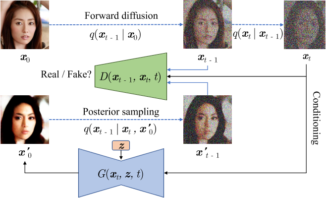

Tackling the Generative Learning Trilemma with Denoising Diffusion GANs
核心问题是什么?
作者认为可以从三个维度来评价一个生成模型的好坏：

其中Diffusion based生成模型的主要问题是生成速度慢，因此需要在保持高采样质量和多样性的前提下，针对采样速度慢的问题进行加速。
核心贡献是什么？
Diffusion模型缓慢采样的根本原因是去噪步骤中的高斯假设，该假设仅适用于小步长。为了实现大步长的去噪，从而减少去噪步骤的总数，作者建议使用复杂的多模态分布对去噪分布进行建模。因此引入了去噪扩散生成对抗网络（去噪扩散 GAN），它使用多模态条件 GAN 对每个去噪步骤进行建模。总之，我们做出以下贡献：
- 将扩散模型的缓慢采样归因于去噪分布中的高斯假设，并建议采用复杂的多模态去噪分布。
- 提出去噪扩散 GAN，这是一种扩散模型，其逆过程由条件 GAN 参数化。
- 通过仔细的评估，我们证明，与当前图像生成和编辑的扩散模型相比，去噪扩散 GAN 实现了几个数量级的加速。
大致方法是什么？
Denoising Diffusion GAN的设定
前向扩散过程与原来的DDPM模型一致，只是T非常小（T < 8），且每个扩散步的\(\beta_t\)很大。
训练目标为最小化生成分布与真实分布的距离（同DDPM）对抗性损失，这个对抗性损失能够最小化散度。
判别器的定义为\(D_{\phi}(x_{t-1},x_t,t): R^N \times R^N \times R -> [0,1]\)，即输入N维的\(x_{t-1}\) 和 \(x_{t}\)，输出 \(x_{t-1}\)是\(x_{t}\) 的去噪版本的置信度。
判别器对真实分布与生成分布做区分，但真实分布是未知的，无法直接训练判别器。为了解决这个问题，作者在这里做了转换：

关于这个转换与非饱和GAN目标这一部分不懂
模型的重参数化
直接预测 \(x_{t-1})\)较为困难，因为现在的去噪模型更加复杂，且是一个隐式的模型(原来的建模只是简单的高斯分布)。但是由于正向扩散过程仍然是加的高斯噪声，因此无论步长多大或者数据分布多复杂，依然有 \(q(x_{t-1}|x_t, x_0)\)服从高斯分布这一性质。因此去噪过程为：
先使用去噪模型 \(f_\theta(x_t,t)\) 预测 x0,再用给定的 xt 和预测出的 x0 来从后验分布 \(q(x_{t-1}|x_t,x_0)\) 中采样得到。

训练流程图如下所示:

有效
本文相对于DDPM的优势:
- \(p_\theta(x_{t-1}|x_t)\) 的构建类似于原始DDPM，可以利用原来的归纳偏置。但原来的DDPM是以确定性映射的方式由 xt 预测 x0 ,而在作者的设计中 x0 是由带随机隐变量 z 的生成器得到的。这一关键差异使得作者的去噪分布模型 \(p_\theta(x_{t-1}|x_t)\) 能够变得多模态以及更加复杂，而DDPM的去噪模型是简单的、单模态的高斯分布。
2.对于不同的时间步 t ，xt 相对于原始图片的扰动程度是不同的，因此使用单个网络直接预测不同时间步的 \(x_{t-1}\) 可能是困难的。但在作者的设定下生成器只需要预测未经扰动的 x0，然后再利用 \(q_\theta(x_{t-1}|x_t,x_0)\) 加回扰动。
本文相对于GAN的优势：
传统的GAN训练完后一步就能生成样本，而本模型要迭代地去噪来获得样本。因此:
-
GAN存在训练不稳定以及模式坍缩的问题。
-
直接一步从复杂分布中生成样本是很困难的，而作者的模型将生成过程分解为几个条件的去噪-扩散步骤，每一步由于基于强条件 xt ，相对来说会更容易建模。
-
判别器只看干净的样本可能存在过拟合问题。而扩散过程可以平滑数据分布，使得判别器没那么容易过拟合。
扩散过程相当于对原始图片加噪声，相当于做了数据增强，有缓解过拟合的作用；另一方面，我们的数据集是有限的，相当于是数据分布上的一些离散的点，加上噪声相当于让点扩散开来，将这些离散的点"连起来"成为一片区域，从而平滑了数据分布。
缺陷
验证
移掉隐变量会让模型变成单模态分布，并在消融实验中定量的证明了这一点
启发
遗留问题
参考材料
https://zhuanlan.zhihu.com/p/503932823